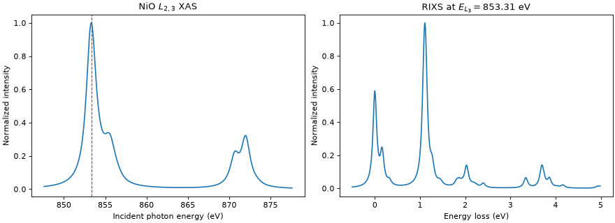

NiO crystal-field \(L_{2,3}\) XAS & RIXS
The calculation treats NiO as an ionic Ni \(3d^8\) site in a cubic field and excites a \(2p\) electron into the \(3d\). It includes an effective exchange field acting along the \(<112>\) direction.
The RIXS spectrum is calculated at the global maximum of the XAS and summed over two orthogonal outgoing linear polarizations.
"""Calculate NiO crystal-field L2,3-edge XAS and RIXS spectra."""
import matplotlib.pyplot as plt
import numpy as np
import edrixs
# Slater integrals
F2_dd, F4_dd = 11.142, 6.874
F2_dp, G1_dp, G3_dp = 6.667, 4.922, 2.796
F0_dd = 2 * (F2_dd + F4_dd) / 63
F0_dp = G1_dp / 15 + 3 * G3_dp / 70
slater_i = [F0_dd, F2_dd, F4_dd]
slater_n = [
F0_dd, F2_dd, F4_dd,
F0_dp, F2_dp, G1_dp, G3_dp,
0.0, 0.0,
]
# emat terms on the 3d shell.
ten_dq = 1.1
zeta_3d, zeta_2p = 0.081, 11.498
exchange = 6 * 0.027
ext_B = exchange / (2 * np.sqrt(6)) * np.array([1.0, 1.0, 2.0])
edge_shift = 857.6
*problem, shift = edrixs.model_1v1c(
('d', 'p'),
shell_level=(0.0, -edge_shift),
v_soc=(zeta_3d, zeta_3d),
c_soc=zeta_2p,
v_noccu=8,
slater=(slater_i, slater_n),
v_cfmat=edrixs.cf_cubic_d(ten_dq),
ext_B=ext_B,
on_which='spin',
sparse_U=True,
)
backend = 'scipy'
hmat_i, hmat_n, trans_ops = edrixs.get_ops(*problem, backend=backend)
eval_i, evec_i = edrixs.ed(
hmat_i, shift=shift,
num_evals=3,
backend=backend,
)
# Calculate XAS spectrum.
energy = np.linspace(edge_shift - 10, edge_shift + 20, 3001)
gamma_c = 0.65
xas = edrixs.xas(
eval_i, evec_i, hmat_n, trans_ops, energy,
gamma_c=gamma_c,
pol_type=[('linear', 0)],
backend=backend,
).sum(-1)
xas /= xas.max()
# Calculate RIXS at the global XAS maximum. Summing two orthogonal
# scattered polarizations represents a measurement without outgoing
# polarization analysis.
resonance_energy = energy[np.argmax(xas)]
energy_loss = np.arange(-0.5, 5, 0.01)
rixs = edrixs.rixs(
eval_i, evec_i, hmat_i, hmat_n, trans_ops,
np.array([resonance_energy]), energy_loss,
gamma_c=gamma_c,
gamma_f=0.05,
pol_type=[
('linear', 0, 'linear', 0),
('linear', 0, 'linear', np.pi / 2),
],
backend=backend,
backend_kws={
'nkryl': 45,
'linsys_tol': 1e-10,
'linsys_maxiter': 1000,
},
)
rixs_spectrum = rixs[0].sum(axis=-1)
rixs_spectrum /= rixs_spectrum.max()
fig, (ax_xas, ax_rixs) = plt.subplots(
1, 2, figsize=(11, 4), constrained_layout=True
)
ax_xas.plot(energy, xas)
ax_xas.axvline(resonance_energy, color='tab:red', linestyle='--', linewidth=1)
ax_xas.set_xlabel('Incident photon energy (eV)')
ax_xas.set_ylabel('Normalized intensity')
ax_xas.set_title(r'NiO $L_{2,3}$ XAS')
ax_rixs.plot(energy_loss, rixs_spectrum)
ax_rixs.set_xlabel('Energy loss (eV)')
ax_rixs.set_ylabel('Normalized intensity')
ax_rixs.set_title(r'RIXS at $E_{L_3}=%.2f$ eV' % resonance_energy)
plt.show()
